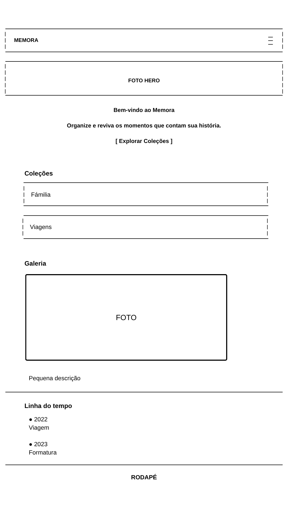
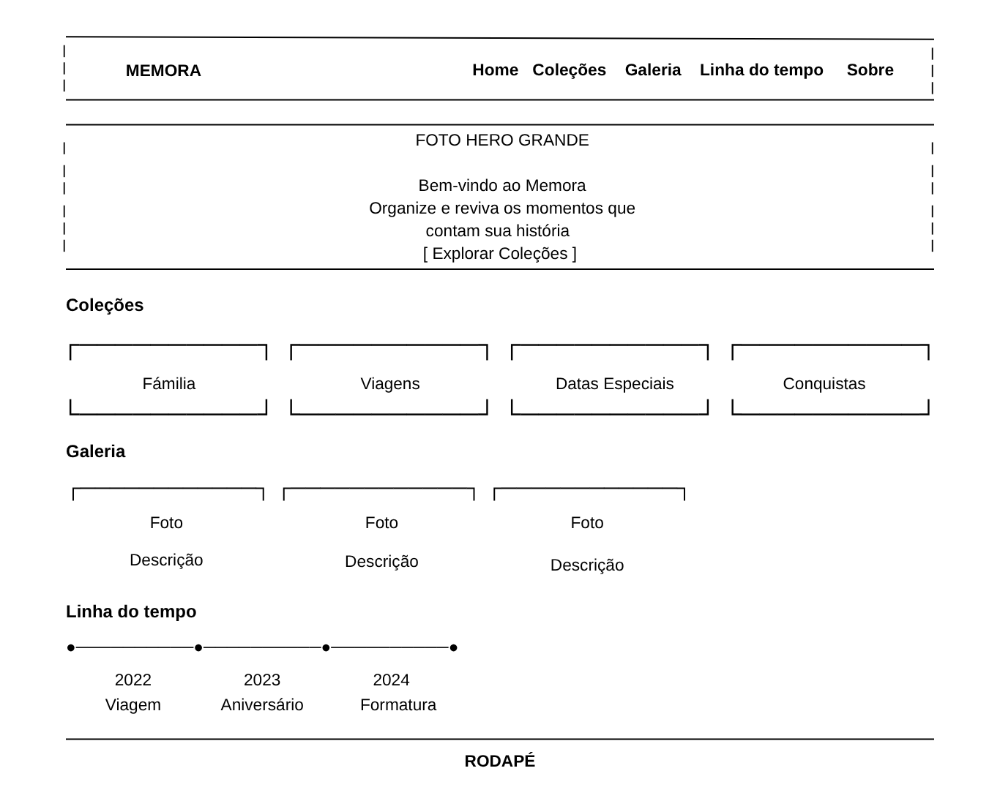

Nome do Site
Memora
O nome "Memora" foi escolhido por ser curto, fácil de lembrar e representar a ideia de preservar lembranças e momentos especiais.
Finalidade do Site
O Memora é um álbum digital criado para organizar e revisitar os momentos mais especiais da vida. O site reunirá galerias de fotos organizadas por categorias, como família, viagens, aniversários e conquistas, permitindo que os usuários encontrem cada registro por meio de filtros, pesquisa e uma linha do tempo interativa.
Cenários
- Como posso encontrar as fotos de uma viagem específica?
- Onde estão organizados os registros dos aniversários da minha família?
Esquema de Cores
Marsala (#7A3E48)
Usado no cabeçalho, títulos e botões.
Terracota (#C98C6B)
Aplicada em detalhes, links e elementos de apoio.
Bege Claro (#FAF7F2)
Cor de fundo principal do site
Branco (#FFFFFF)
Usado nos cartões e áreas de conteúdo
Marrom Escuro (#3B3533)
Cor utilizada para o texto principal.
Tipografia
- Playfair Display — títulos e nome do site
- Poppins — textos, menus e botões
Wireframe Mobile

Wireframe Desktop
